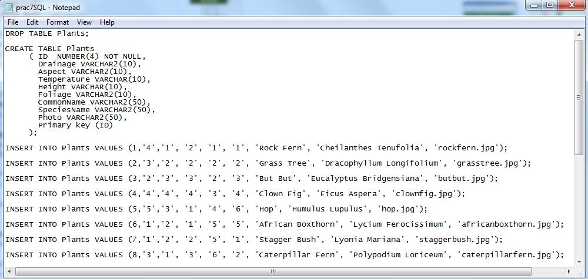
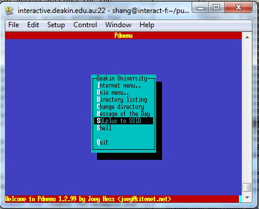
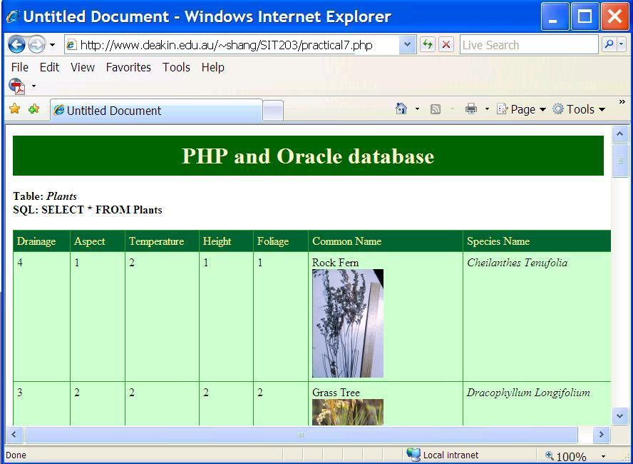
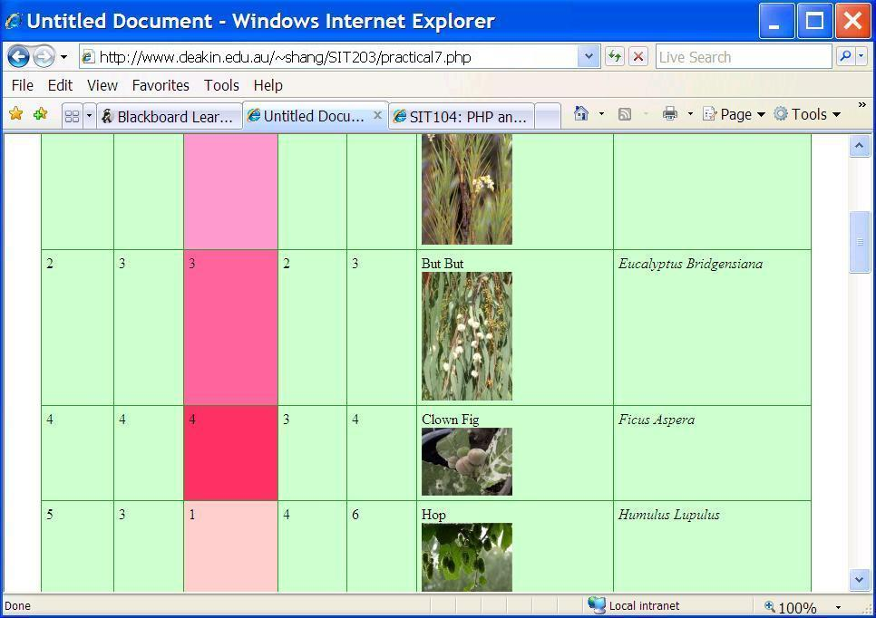
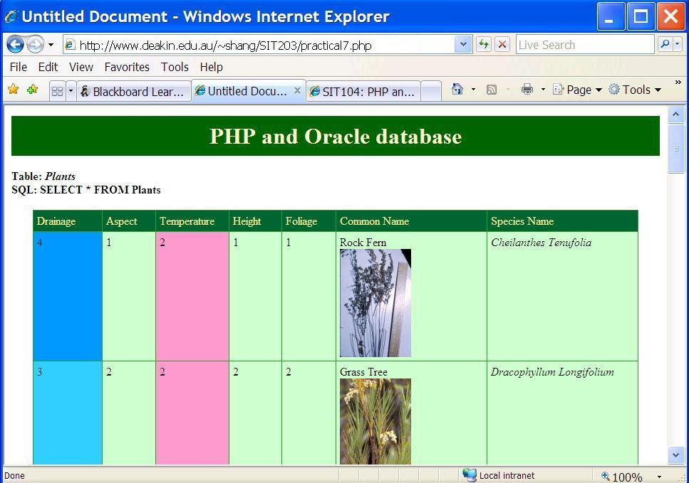

Upon completion of this session you should be able to:
(Note: if a link is not loaded properly in CloudDeakin, please right click on the link and open it in New Tab.)
Let's review the PHP and Oracle database connect first. Please skip to Ajax and PHP if you've done this part in SIT104.
For any program or script to access a database requires a driver of some kind; a piece of software that links the program (in our case a PHP script and the interpreter) to the database. There are several ways that we can do this, depending on which platform (operating system) the web server is running, and the database systems available on that system. Each way has a somewhat different setup, and uses slightly different PHP syntax. This makes for code that is not fully portable, but that is one of the problems that 'real world' system developers in this field have to grapple with. We will focus on how to make it work, and on understanding what is happening, rather than on different ways of doing this. Those who want to know more can obviously do some research to extend the material we are covering here.
The Oracle database management system is available on the University system, and accessible by Telnet. Also the Deakin web server has support for using PHP with Oracle databases. So in this unit, we chose to use Oracle database management system to create and manage the databases, and the Deakin web server to deliver the PHP pages.
Now we are going to use PHP to connect to and retrieve information from an Oracle database table named "plants"; then we will add records to (and change values in) the database table. Download this plants table and plants pics, then save them onto your Deakin home area (eg. public_html/SIT203/).
This table (called Plants) has eight fields: Drainage, Aspect, Temperature, Height, Foliage, CommonName, SpeciesName, and Photo. If you open this file in note pad, you would see all the sql statements used to create a table and insert records in this Plants table:

This table currently has twenty records (lines of data) in it. We are going to retrieve those data using PHP, and display the data in neat web pages.
Now telnet (eg. using Putty or Tera Term Pro) to Deakin web server: host can be set as interactive.deakin.edu.au.
Input Deakin user id and password, and select "SQLPlus to SSID" from the menu:

By defualt, your Deakin password is also your Oracle database password. We'd better change the Oracle password as we have to hardcode it in the php file later on.
Under SQL> prompt, type "password" to change it and "@public_html/SIT203/prac7SQL.txt" to load the plants table in Oracle database. Path "public_html/SIT203" is where we save the plants table prac7SQL.txt:
Now the plant table is created in the Oracle database. We need to connect to our database; that is, we have to tell the PHP server where the database is, and how to access it. Create a new php page, and insert the following code fragment in the <body> part.
<?php
/* Set oracle user login and password info */
$dbuser = "xxx"; /* your deakin login */
$dbpass = "xxxxx"; /* your oracle access password */
$db = "SSID";
$connect = oci_connect($dbuser, $dbpass, $db);
if (!$connect) {
echo "An error occurred connecting to the database";
exit;
}
/* build sql statement using form data */
$query = "SELECT * FROM Plants";
/* check the sql statement for errors and if errors report them */
$stmt = oci_parse($connect, $query);
//echo "SQL: $query<br>";
if(!$stmt) {
echo "An error occurred in parsing the sql string.\n";
exit;
}
oci_execute($stmt);?>
Your Oracle user id (which is the same as your Deakin user name ), password and the name of the Oracle database "SSID" are all we need to connect to the database .
Once we have established a connection we can work with the database in any way we want. The last statement oci_execute($stmt) retrieves a collection of records ('sets of data') from the database; it does so using a particular and important method, namely the Structured Query Language, SQL.
SQL is a way of structuring queries on databases. Suppose I wanted to ask "Which plants like dry soil?" I know there is a Drainage field in the database, and I know that a 1 in that field means 'dry soil'. The query can then be seen as "which records in the database (if any) have a value of 1 in the Drainage field?" When we apply that query, we will get a recordset consisting of zero, one or many records (sets of data), each representing a plant that matches the criterion (Drainage = 1).
SQL was developed to provide a clear and consistent way to formulate such queries (and many others). All SQL queries are formed as pseudo-sentences, with a particular structure and keywords. Perhaps the simplest would be:
SELECT * FROM Plants
which means retrieve all the fields (SELECT *) in the table called Plants (FROM Plants). In most (but not all) systems the SQL keywords like SELECT and ORDER have to be upper case, so it is a sensible approach to stick to upper case; this also serves to 'separate' them visually from field names and values.
Unless we tell it otherwise, executing this query will retrieve all the records in the chosen table. If we want only some of the records - in our example we want only those records with a drainage value of 1 - we need to add the WHERE keyword to the statement. (note the single quotes around the value of Drainage):
SELECT * FROM Plants WHERE Drainage='1'
This will retrieve all fields for all the relevant records (if any) ready to be displayed; the name of the field (Drainage) must exactly match one of the fields in the database.
The sequence in which the retrieved records appear is based by default on where they are in the database (which is based on the order in which they were added to the database), but we can override that by asking for them to be sorted:
SELECT * FROM Plants ORDER BY Temperature
The records are now sorted in 'temperature order'. By default this sort order is from lowest to highest; we can override this by specifying the sort order as ASC (ascending: lowest to highest) or DESC (descending: highest to lowest):
SELECT * FROM Plants ORDER BY Temperature DESC
If we want a 'secondary sort' (when records have the same temperature value, they are sorted by another property) we can add another field name:
SELECT * FROM Plants ORDER BY Temperature, CommonName
... which brings us full-circle to the Execute statement in our code earlier!
We change the contents of the string inside oci_execute( ) to change what records we retrieve. We can put any legal SQL statement we want into there; next we will look at how we can create that statement 'on the fly' using values extracted from a form completed by a user (that is, a 'lookup form').
The whole point of being able to retrieve data in this way is to use that data and to display it. We want to do this in a reasonably attractive visual manner (HTML + styles), and in a way that matches the data; as this is a data set (rows and columns) the most obvious way is to create a table. In the rest of the code for this session we are going to use a style sheet that has a 'green' look-and-feel (access.css) that has an obvious relation to data (plants), so we link that in the head section as usual (and don't forget to also upload the style sheet to the Deakin web server):
<link rel="stylesheet" type="text/css" href="access.css">
Start with some normal HTML to set up the page and the table (including the first row of headers); put this at the top of the body section or after command "oci_execute($stmt);?>" :
<h1 class="green">PHP and Oracle databases</h1>
<h4>Table: <em>Plants</em></h4>
<div align="center">
<table width="850" border="0" bgcolor="#339933" cellpadding="5" cellspacing="1">
<tr bgcolor="#006633">
<td width="75" style="color:#ffff99">Drainage</td>
<td width="75" style="color:#ffff99">Aspect</td>
<td width="100" style="color:#ffff99">Temperature</td>
<td width="75" style="color:#ffff99">Height</td>
<td width="75" style="color:#ffff99">Foliage</td>
<td width="200" style="color:#ffff99">Common Name</td>
<td width="250" style="color:#ffff99">Species Name</td>
</tr>
Leave planty of blank lines, then copy the following lines and paste them just before the close of the body section to 'close out' the table and the page:
</table>
</div>
Notice that this is all 'pure' HTML, but the bulk of the table needs to be created using the retrieved data, so it has to be done inside a PHP code block (<?php . . . ?>). We need to display the records, one row of the table for each record we have retrieved - so we need to put all the code to do this between these two existing blocks. It also means that we need to loop through all the records; actually we should probably check first if there are any records, otherwise the table will be empty and strange-looking! (We'll do that in the next session.)
We need to loop through the records, but we don't know how many there are (yet), so we can't use a for loop; this is one of the uses of the while loop, and our stopping condition is when we have reached the 'end of the file' :
while(oci_fetch_array($stmt)) {
.
.
// do stuff with the retrieved records
.
.
}
We access the individual fields in our retrieved records using statements of the form $fg1 = oci_result($stmt,"DRAINAGE"); //Drainage must appear uppercase or $fg1 = oci_result($stmt, 2); // 2 is the column number of drainage field in plants table . This places the value of the Drainage field for the current record into a variable called $fg1 (which can be any legitimate variable name, of course), ready to be displayed using our familiar echo statement:
$fg1 = oci_result($stmt,"DRAINAGE");
echo ($fg1);
We can modify the default appearance of the resulting text by placing normal HTML tags in with it as strings:
$fg1 = oci_result($stmt,"DRAINAGE");
echo ("<em>".$fg1."</em>");
Okay, copy and paste all of the following code between the two blocks you have already put into the file (between </tr> ... and ... </table>):
<?php
// Display all the values in the retrieved records, one record per row, in a loop
while(oci_fetch_array($stmt)) {
// Start a row for each record
echo("<tr valign=top bgcolor=#ccffcc>");
// Output fields, one per column
// Drainage value in column one
$fg1 = oci_result($stmt,"DRAINAGE"); //"Drainage";
echo("<td width=75>");
echo ($fg1);
echo("</td>");
// Aspect value in column two
$fg2 = oci_result($stmt,"ASPECT");//"Aspect";
echo("<td width=75>");
echo ($fg2);
echo("</td>");
// Temperature value in column three
$fg3 = oci_result($stmt,"TEMPERATURE");//"Temperature";
echo("<td width=75>");
echo ($fg3);
echo("</td>");
// Height value in column four
$fg4 = oci_result($stmt,"HEIGHT");//"Height";
echo("<td width=75>");
echo ($fg4);
echo("</td>");
// Foliage value in column five
$fg5 = oci_result($stmt,"FOLIAGE");//"Foliage";
echo("<td width=75>");
echo ($fg5);
echo("</td>");
// Common Name and Photo in column six
$fg6 = oci_result($stmt,"COMMONNAME");//"CommonName";
echo("<td width=250>");
echo ($fg6);
$fg8 = oci_result($stmt,"PHOTO");//"Photo";
// Pictures are in a 'plants' sub-directory elsewhere on the server, so use the full URL
echo ("<br><img src=http://www.deakin.edu.au/~shang/SIT203/plant_pics/".$fg8."><br>");
echo("</td>");
// Sepcies Name in column seven
$fg7 = oci_result($stmt,"SPECIESNAME");//"SpeciesName";
echo("<td width=250><em>");
echo ($fg7);
echo("</em></td>");
// End the row
echo("</tr>");
}
// Close the connection
oci_close($connect);
?>
You should be able to see that we put the field value into a variable ($fg1 ... $fg7), create a table cell (<td>) for each field (the order that we display them as columns is up to us), write the value of the field into it with an echo statement, then close the cell (</td>). As well as numbers and text, this table has field that stores links to a picture of each plant; We use a text field for this, and we store the name of the image file (such as acacia.jpg). When we display that field, as these files are not in the same directory as the script file, we have to point to them; we could use a relative path (../plants_pics/ for example), or we could use the full URL as we are doing here. If you are using images in this way in your database table, you would just put them in your folder under public_html directory on the Deakin web server and specify the full path or URL.
If all goes well ... when you deliver this page from the Deakin web server [using its full URL, such as http://www.deakin.edu.au/~your_user_id/SIT203/practical7.php, you should see a web page that looks something like this:

This looks pretty good, but it could easily be made more attractive and understandable as a table. What if we used the value of the various fields that we retrieve to set the background colour of the relevant cell? This would 'colour code' the various cells to emphasise the structure of the table a bit more. Let's apply this approach first to the Temperature field (which is our primary sort field). Find the four lines that output the temperature value for each record:
$fg3 = oci_result($stmt,"TEMPERATURE");
echo("<td width=75>");
echo $fg3;
echo("</td>");
and replace them with the following block of code:
$fg3 = oci_result($stmt,"TEMPERATURE");
// Set bgcolor by value
switch (intval($fg3)) {
case 1:
echo("<td width=100 class=red1>");
break;
case 2:
echo("<td width=100 class=red2>");
break;
case 3:
echo("<td width=100 class=red3>");
break;
case 4:
echo("<td width=100 class=red4>");
}
echo $fg3;
echo("</td>");
When you upload and deliver it from the Deakin web server now the page should look like this:

All we are doing is using the switch statement to set the bgcolor of a cell, based on the retrieved temperature value. As we prefer an integer (1, 2, ...) case, and the Temperature field in our database is a text field, we convert the value to an integer with the intval() function.
Finally, replace the lines that display the value of the Drainage field
$fg1 = oci_result($stmt,"DRAINAGE");
echo("<td width=75>");
echo $fg1;
echo("</td>");
with the following block of code:
$fg1 = oci_result($stmt,"DRAINAGE");
// Set bgcolor by value
switch (intval($fg1)) {
case 1:
echo("<td width=100 class=blue1>");
break;
case 2:
echo("<td width=100 class=blue2>");
break;
case 3:
echo("<td width=100 class=blue3>");
break;
case 4:
echo("<td width=100 class=blue4>");
break;
case 5:
echo("<td width=100 class=blue5>");
}
echo $fg1;
echo("</td>");
The page should now look like this:

You can experiment with the layout of the table in various other ways; all you need to do is use the values of the retrieved data to control style properties. You can also experiment with the SQL statement itself; to become more familiar with SQL (ready for subsequent practicals and the assignment) you should try to
Make sure that the whole string is in double quotes - and don't forget the single quotes in the WHERE section!
In subsequent practicals we will assume that you know how to create SQL statements to retrieve data, so make sure that you are thoroughly familiar with this process. Time spent on this will be amply rewarded later; 'just making it work' should not be enough.
We know Ajax is used to create more interactive applications. A server side programm called by the XMLHttpRequest object can be a PHP file.
For example, the following Ajax programm demonstrates how a web page can communicate with a web server while a user type characters in an input field. When a user types a character in the input field above, the function "showHint()" is executed. The function is triggered by the "onkeyup" event:
<!doctype html>
<html>
<head>
<script type="text/javascript">
function showHint(str)
{
if (str.length==0)
{
document.getElementById("txtHint").innerHTML="";
return;
}
xmlhttp=new XMLHttpRequest();
xmlhttp.onreadystatechange=function()
{
if (xmlhttp.readyState==4 && xmlhttp.status==200)
{
document.getElementById("txtHint").innerHTML=xmlhttp.responseText;
}
}
xmlhttp.open("GET","gethint.php?q="+str,true);
xmlhttp.send();
}
</script>
</head
<body>
<p><b>Start typing a name in the input field below:</b></p>
<form>
First name: <input type="text" onkeyup="showHint(this.value)" size="20" />
</form>
<p>Suggestions: <span id="txtHint"></span></p>
</body>
</html>
If the input field is empty (str.length==0), the function clears the content of the txtHint placeholder and exits the function.
If the input field is not empty, the showHint() function executes the following:
The page on the server called by the JavaScript above is a PHP file called "gethint.php". It checks an array of names, and returns the corresponding name(s) to the browser:
<?php
// Fill up array with names
$a[]="Anna";
$a[]="Brittany";
$a[]="Cinderella";
$a[]="Diana";
$a[]="Eva";
$a[]="Fiona";
$a[]="Gunda";
$a[]="Hege";
$a[]="Inga";
$a[]="Johanna";
$a[]="Kitty";
$a[]="Linda";
$a[]="Nina";
$a[]="Ophelia";
$a[]="Petunia";
$a[]="Amanda";
$a[]="Raquel";
$a[]="Cindy";
$a[]="Doris";
$a[]="Eve";
$a[]="Evita";
$a[]="Sunniva";
$a[]="Tove";
$a[]="Unni";
$a[]="Violet";
$a[]="Liza";
$a[]="Elizabeth";
$a[]="Ellen";
$a[]="Wenche";
$a[]="Vicky";
//get the q parameter from URL
$q=$_GET["q"];
//lookup all hints from array if length of q>0
if (strlen($q) > 0)
{
$hint="";
for($i=0; $i<count($a); $i++)
{
if (strtolower($q)==strtolower(substr($a[$i],0,strlen($q))))
{
if ($hint=="")
{
$hint=$a[$i];
}
else
{
$hint=$hint." , ".$a[$i];
}
}
}
}
// Set output to "no suggestion" if no hint were found
// or to the correct values
if ($hint == "")
{
$response="no suggestion";
}
else
{
$response=$hint;
}
//output the response
echo $response;
?>
If there is any text sent from the JavaScript (strlen($q) > 0), the following happens:
AJAX can be used for interactive communication with a database. The following example demonstrates how a web page fetches information from an Oracle database with AJAX:
The database table we use in this example looks like this. You need to create this table first in your Oracle database:
DROP TABLE users;
CREATE TABLE users
( id NUMBER(4) NOT NULL,
FirstName VARCHAR2(10),
LastName VARCHAR2(10),
Age VARCHAR(10),
Hometown VARCHAR(10),
Job VARCHAR2(50),
Primary key (id)
);
INSERT INTO users VALUES (1,'Mary','Doss', '42', 'Geelong', 'High School teacher');
INSERT INTO users VALUES (2,'Robert','Dew', '40', 'Newport', 'Piano Teacher');
INSERT INTO users VALUES (3,'Matt','Rough', '34', 'Geelong', 'University Lecturer');
commit;
When a user selects a user in the dropdown list above, a function called "showUser()" is executed. The function is triggered by the "onchange" event:
<!doctype html>
<html>
<head>
<script type="text/javascript">
function showUser(str)
{
if (str=="")
{
document.getElementById("txtHint").innerHTML="";
return;
}
xmlhttp=new XMLHttpRequest();
xmlhttp.onreadystatechange=function()
{
if (xmlhttp.readyState==4 && xmlhttp.status==200)
{
document.getElementById("txtHint").innerHTML=xmlhttp.responseText;
}
}
xmlhttp.open("GET","getuser.php?q="+str,true);
xmlhttp.send();
}
</script>
</head>
<body>
<form>
Select a Customer:
<select name="customers" onchange="showUser(this.value)">
<option value="0">--select one --</option>
<option value="1">Mary Doss</option>
<option value="2">Robert Dew</option>
<option value="3">Justin Rough</option>
</select>
</form>
<br />
<div id="txtHint"><b>Person info will be listed here.</b></div>
</body>
</html>
The page on the server called by the JavaScript above is a PHP file called "getuser.php". It runs a query against an Oracle database, and returns the result in an HTML table:
<?php
/*
The database table we use in this example looks like this:
id FirstName LastName Age Hometown Job
1 Mary Doss 42 Geelong High school teacher
2 Robert Dew 40 Newport Piano Teacher
3 Justin Rough 34 Geelong University Lecturer
*/
$q=$_GET["q"]; //or $q=$_REQUEST["q"];
/* Set oracle user login and password info */
$dbuser = "xxx"; /* your deakin login */
$dbpass = "xxxx"; /* your oracle access password */
$db = "SSID";
$connect = oci_connect($dbuser, $dbpass, $db);
if (!$connect) {
echo "An error occurred connecting to the database";
exit;
}
/* build sql statement using form data */
$query ="SELECT * FROM users WHERE id = '".$q."'";
/* check the sql statement for errors and if errors report them */
$stmt = oci_parse($connect, $query);
if(!$stmt) {
echo "An error occurred in parsing the sql string.\n";
exit;
}
oci_execute($stmt);
echo "<table border='1'>
<tr>
<th>Firstname</th>
<th>Lastname</th>
<th>Age</th>
<th>Hometown</th>
<th>Job</th>
</tr>";
// Display all the values in the retrieved records, one record per row, in a loop
while(oci_fetch_array($stmt)) {
echo "<tr>";
echo "<td>" . oci_result($stmt,"FIRSTNAME") . "</td>";
echo "<td>" . oci_result($stmt,"LASTNAME") . "</td>";
echo "<td>" . oci_result($stmt,"AGE") . "</td>";
echo "<td>" . oci_result($stmt,"HOMETOWN") . "</td>";
echo "<td>" . oci_result($stmt,"JOB") . "</td>";
echo "</tr>";
}
echo "</table>";
// Close the connection
oci_close($connect);
?>
When the query is sent from the JavaScript to the PHP file, the following happens:
Please show your attempt to your tutor before you leave the lab, or email your files to your coordinator if you are an off-campus student.
In this session we have covered
The contents of this week's practical are obtained from the following websites with moderate modifications:
1. Practical 8: PHP and Databases, SIT104 Introduction to Web Development CloudDeakin website, Deakin University, 2017.
2. PHP and Ajax page, w3schools website, available at <http://www.w3schools.com/php/php_ajax_php.asp>, accessed 05/07/2017.